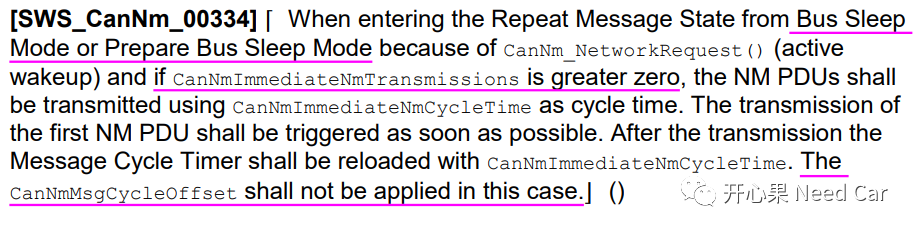
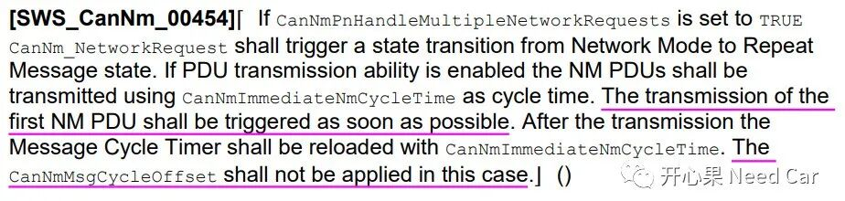
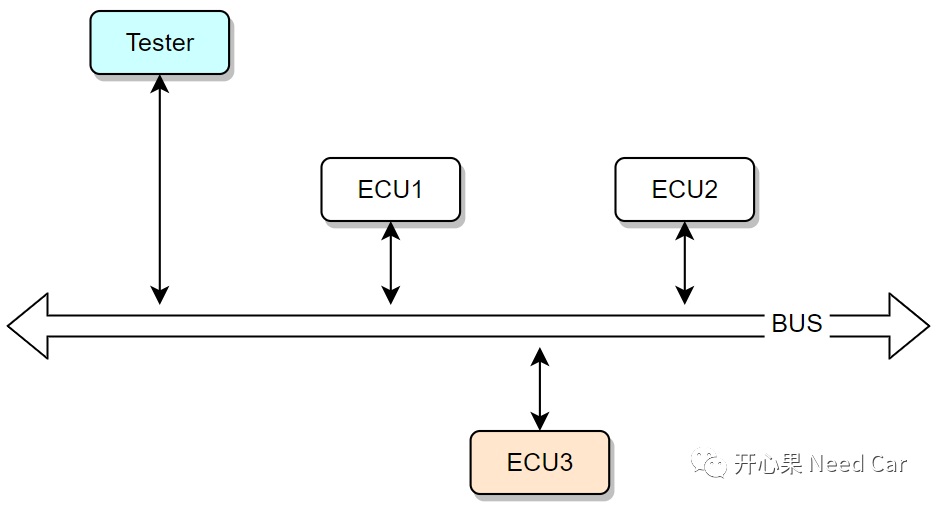
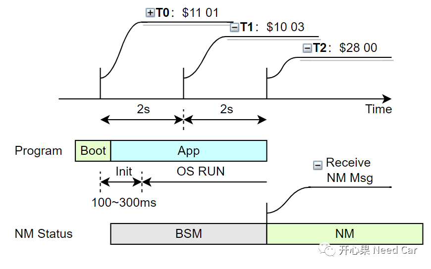
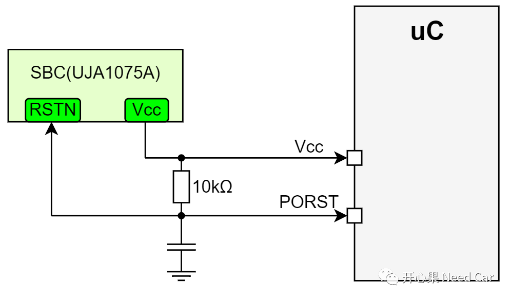

诚如标题，本文对Autosar网络管理文章的一些表述进行纠错。再次感谢读者对我的包容和指正！我会继续扔砖头，接受大家的批评，之后改正，反馈大家正确的观点。
此处表达不准确，收到网络管理报文（没有PN功能），被动唤醒(调用CanNm_PassiveStartUp()接口)，没有快发模式。即：被动唤醒没有快发模式。- 调用CanNm_NetworkRequest()接口主动请求网络；
- CanNmImmediateNmTransmissions＞0。
看一下Autosar规范给的解释，如下所示：
CASE1：

可以看出，由BSM或者PBSM进入RMS，由CanNm_NetworkRequest()触发，且CanNmImmediateNmTransmissions＞0时，使能快发模式。

CanNmPnHandleMultipleNetworkRequests = TRUE，可以理解为PN功能使能，调用CanNm_NetworkRequest()接口进入RMS状态时，CanNmImmediateNmTransmissions＞0，使能快发模式。
- CanNmImmediateNmTransmissions设置为1，没有意义，工程需求中，常见设置：10、20等；
- CanNmRepeatMessageTime > CanNmImmediateNmTransmissions *
CanNmImmediateNmCycleTime，即：快发模式限于RMS状态；
- 快发功能使用时，CanNmMsgCycleOffset不再适用，既然都快发了，就是想快速唤醒网络，所以，没必要再延迟发送NM Msg。
Fr节点进入RSS状态以后，即使本节点有内部网络请求（Network Request，比如：VFC置位），节点也不会进入NOS状态。”，该表达不准确。完整的解读Autosar规范如下所示：意思是说，Flexray节点在RSS状态下，如果同时满足如下条件：
FrNm_ReaySleepCnt>0；
FrNm_NetworkRequest=TRUE，主动调用FrNm_NetworkRequest()接口；
FrNM_RepeatMessage=FALSE。
在当前Repetition Cycle结束后，Flexray节点的网络状态由RSS进入NOS状态。
Q1：Application软件升级，$11复位后，节点处于何种网络状态？
A1：本问题源于一个朋友的讨论。在此，说一下个人理解。正常的刷写流程中，一般操作如下：Step1：拓展会话($10 03)中，使用功能寻址将总线上的所有节点通信（0x28服务）和DTC监控（0x85服务）禁用，功能寻址一直在周期性发送$3E 80（维持会话）；Step2：使用物理寻址升级目标ECU（进入编程会话，$10 02），比如：下图的ECU3；Step3：ECU3升级完成以后，使用物理寻址发送$11 01服务，复位ECU3；
Step4：等待一定时间（比如：2s）,功能寻址发送$10 03服务，使ECU3进入拓展会话；
Step5：再等待一定时间（比如：2s）,功能寻址发送$28服务，使能所有节点通信；
具体解释：
Step3中，发送$11 01使ECU3复位，ECU3执行复位，由Boot跳转到Application，Application程序初始化，Application程序运行起来，需要一定时间，这是上位机（Tester）延迟2s的作用(确保Application程序已经完成初始化动作)，这个时间内ECU3节点网络处于BSM（Bus Sleep Mode）模式；Step4中，功能寻址发送$10 03服务，主要使ECU3进入拓展会话。在升级ECU3的过程中，由于Tester一直周期性发送$3E 80（避免因S3超时，ECU1、ECU2进入默认会话，使得通信和DTC控制失效），ECU1和ECU2一直在拓展会话呆着。Step5中，又经过2s时间，Tester发送$28 00服务，开启通信。提示：$28服务针对非诊断报文的通信（比如：网络管理报文、应用报文），主要是把总线让给诊断报文，提高刷写速率。所以，ECU3只要完成启动流程，Controller和Transceiver进入Normal模式，ECU3就可以正常接收诊断报文。如果开发的ECU要求网络管理报文唤醒网络，此时ECU3节点的网络状态处于何种模式呢？答：个人理解，BSM。虽然上位机从请求ECU复位到发送$28服务（开通信）间隔了4s时间，但是这4s时间内有一定的时间ECU在完成初始化（一般要求100~300ms时间范围）。

T0时刻，ECU3收到$11 01复位，一般程序会在Boot呆一定时间，比如：50ms（Stay In Boot功能），之后识别到App程序有效，Jump到App，完成App初始化，在OS RUN之前需要100~300ms时间不等（每个项目的代码量和功能有所不同，耗时不同）。
到T2时刻使能通信之前的这段时间，ECU3处于BSM模式，原因：没有收到有效的唤醒事件（比如：没有收到网络管理报文）。注意：ECU1和ECU2一直处于NM（Network Mode），因为诊断报文在一直维持两者的网络状态。
T2时刻，ECU1和ECU2的通信使能，可以发送网络管理报文和应用报文，ECU3接收到网络管理报文以后，进入NM，ECU3相当于被动唤醒。
所以，从ECU3复位，到接收到$28 00服务，近4s的时间内，ECU3的网络状态处于BSM模式。
- 再次提醒：不要混淆ECU唤醒和网络唤唤醒。虽然ECU3收到诊断报文，可以处理诊断服务，但是诊断报文并不是有效的唤醒源，如果Transceiver没有硬件过滤功能，诊断报文可以将ECU唤醒（uC被供电），但是网络并未唤醒，此时ECU会保持一定时间验证唤醒事件的有效性，比如：3s等；
- 有些节点的Transceiver有过滤功能，即：只能有效的网络管理报文被接收，所以，冷启动时，诊断报文，ECU接收不到；
- 某些ECU的开发中，会将诊断报文作为有效唤醒源，即：网络管理报文一样，可以唤醒网络，诊断报文和注意识别。
工程中，ECU刷写后，需要$11 01执行uC的复位，这个复位可以操作PORST Pin，控制uC的Vcc供电（5V），使得uC完成一个热启动过程，即：ECU复位。注意，这个复位动作，虽然也给uC重新供电，但是，它不同于KL15硬线上电，不能看作主动唤醒，所以$11 01诊断复位不能触发网络的主动唤醒。提示：$11 01复位，执行uC的下电流程，需要执行NVM的存储。
如下通过控制SBC（System Basis Chip）实现uC复位，也可以通过控制外部看门狗实现。

点击下方关注，一起聊聊Autosar/嵌入式，如果需要，联系作者进群，给你更专业的解答